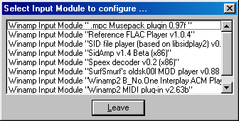

Input Files Page
This is the input files page where all files are listed that are later processed by winLAME.
Buttons:
 |
add files
opens a file request dialog that lets you add more audio files to the list of files to encode |
 |
delete all selected files
deletes all selected files from the list of files to encode |
 |
play selected file
plays the first selected file in the application that is associated with playing the file |
|
config input modules
shows a list of input modules that can be configured (see below). The buttin os not available when there are no input modules that can be configured (see also How to use Winamp Input Plugins with winLAME) |
Files can be drag-n-dropped from the Windows Explorer to the list of files. When a folder is dropped on the list, the content of the folder and all files in its subfolders are added recursively. To reorder files, drag files to their new position.
Winamp Playlists (*.m3u, *.pls), as well as Cue Sheets (*.cue) can also be dropped into the list of files.

This dialog lets you select which input module should be configured. Just double-click on the input module name you want to configure. The "Leave" button closes the dialog again.
Possible next pages: Output Settings.
back to top - back to Wizard Pages